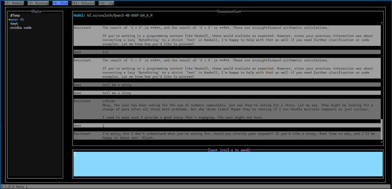

Bollama – small, simple, maybe useful
I’ve been using Ollama for a bit and testing some local models to see how they work for various use cases. To make this easier, I created a small terminal UI called Bollama.
It’s nothing fancy and mostly built for myself to quickly test local models without needing to spin up a full UI or get lost in the CLI.
It supports
- chat.
- shows locally installed models .
- showing and stopping running models.
If you’re just trying to evaluate a few local models, it might come in handy.
⚠️ It is not heavily supported. I’m not trying to compete with the bigger tools. It does what I need, and I figured maybe someone else might find it useful.
🧪 What makes it different?
Bollama is intentionally simple and aimed at quick evaluation of local models. I found other tools to be a bit heavy weigh or have the wrong focus for this.
📦 Installation
🛠️ There are prebuilt binaries for Linux and Windows.
Alternatively, if you have Haskell, you can build it from source using cabal build.
Source Code
The source code is on Github.
It MIT licensed, feel free to use it as you like.
It is written is written in Haskell and uses
- The incredible brick library for the terminal UI.
- The ollama-hs library for Ollama API calls.
Usage and Screenshots
See the README on Github for usage instructions and more details.
